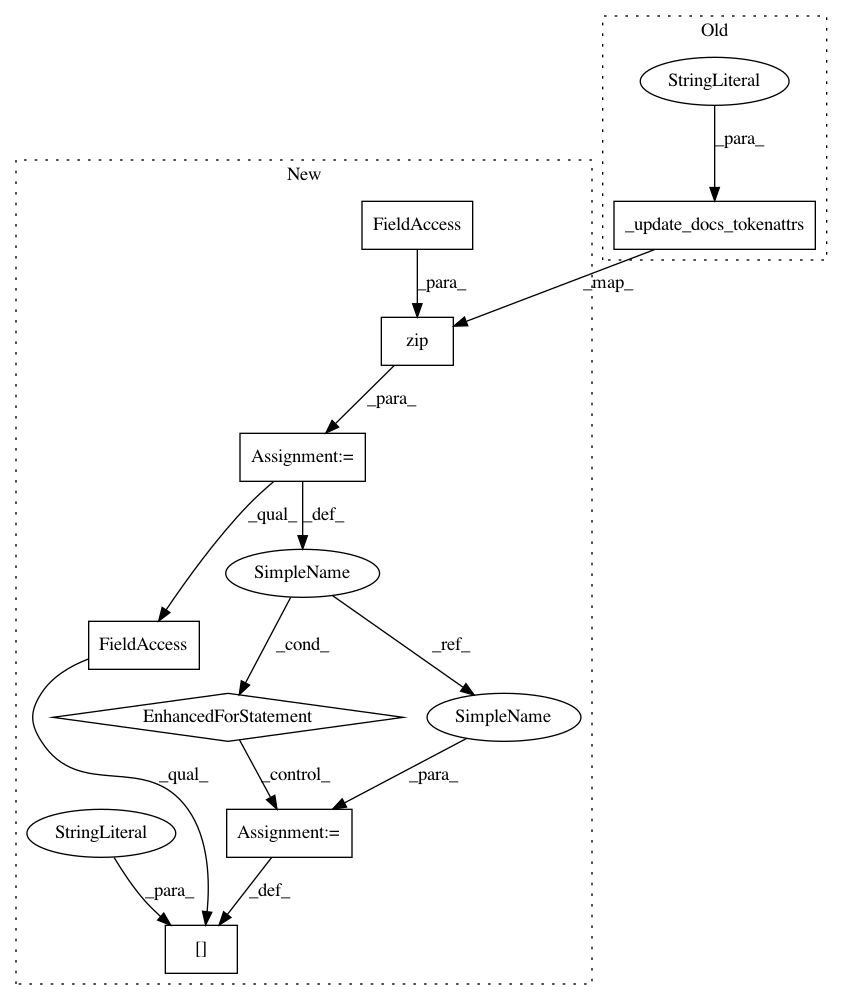

387e2c43970dcb6a5f57fda43662b3e9a8df0674,tmtoolkit/preprocess/_preprocworker.py,PreprocWorker,_task_transform_tokens,#PreprocWorker#Any#,288
Before Change
self._ngrams = {}
def _task_transform_tokens(self, transform_fn, **kwargs):
self._update_docs_tokenattrs("text", transform(self._tokens, transform_fn, **kwargs))
def _task_tokens_to_lowercase(self):
self._update_docs_tokenattrs("text", _get_docs_tokenattrs(self._docs, "lower_", custom_attr=False))
After Change
self._ngrams = {}
def _task_transform_tokens(self, transform_fn, **kwargs):
for doc, new_tok in zip(self._docs, transform(self._tokens, transform_fn, **kwargs)):
doc.user_data["tokens"] = new_tok
def _task_tokens_to_lowercase(self):
for doc, new_tok in zip(self._docs, _get_docs_tokenattrs(self._docs, "lower_", custom_attr=False)):
doc.user_data["tokens"] = new_tok
In pattern: SUPERPATTERN
Frequency: 3
Non-data size: 8
Instances
Project Name: WZBSocialScienceCenter/tmtoolkit
Commit Name: 387e2c43970dcb6a5f57fda43662b3e9a8df0674
Time: 2020-01-30
Author: markus.konrad@wzb.eu
File Name: tmtoolkit/preprocess/_preprocworker.py
Class Name: PreprocWorker
Method Name: _task_transform_tokens
Project Name: WZBSocialScienceCenter/tmtoolkit
Commit Name: 387e2c43970dcb6a5f57fda43662b3e9a8df0674
Time: 2020-01-30
Author: markus.konrad@wzb.eu
File Name: tmtoolkit/preprocess/_preprocworker.py
Class Name: PreprocWorker
Method Name: _task_tokens_to_lowercase
Project Name: WZBSocialScienceCenter/tmtoolkit
Commit Name: 387e2c43970dcb6a5f57fda43662b3e9a8df0674
Time: 2020-01-30
Author: markus.konrad@wzb.eu
File Name: tmtoolkit/preprocess/_preprocworker.py
Class Name: PreprocWorker
Method Name: _task_remove_chars